Eyo its the end of the year! December! Im writing this at 10:32am whilst staring at the booze im planning on polishing off 12 hours from now and i know that im gonna send this out at 11:59pm again so happy new year. Lets get started
A big theme for the start of this month was my works christmas party, I love this costume i made for the gameshow host for my work christmas party, i forgot about the hat in the end but the jacket that doesnt fit is a wonderful vibe
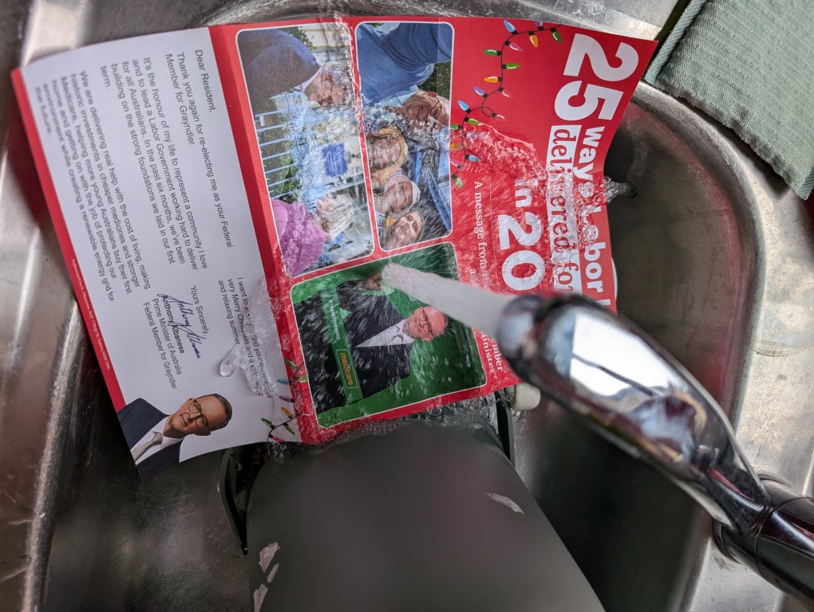
I don't know why i put this flyer from the prime minister in the sink but it felt good
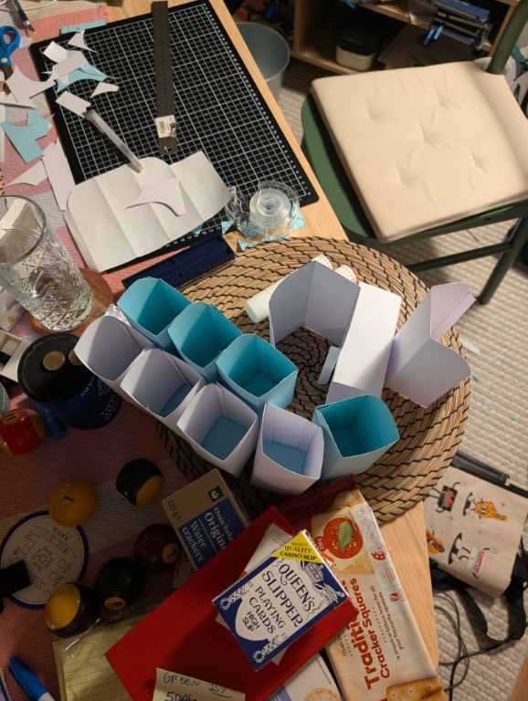
Oh god on the friday night before my works christmas conference on the monday i spent an few hours making these blades (based on the company logo) and then went to hang them up in the empty office we were using for the conference
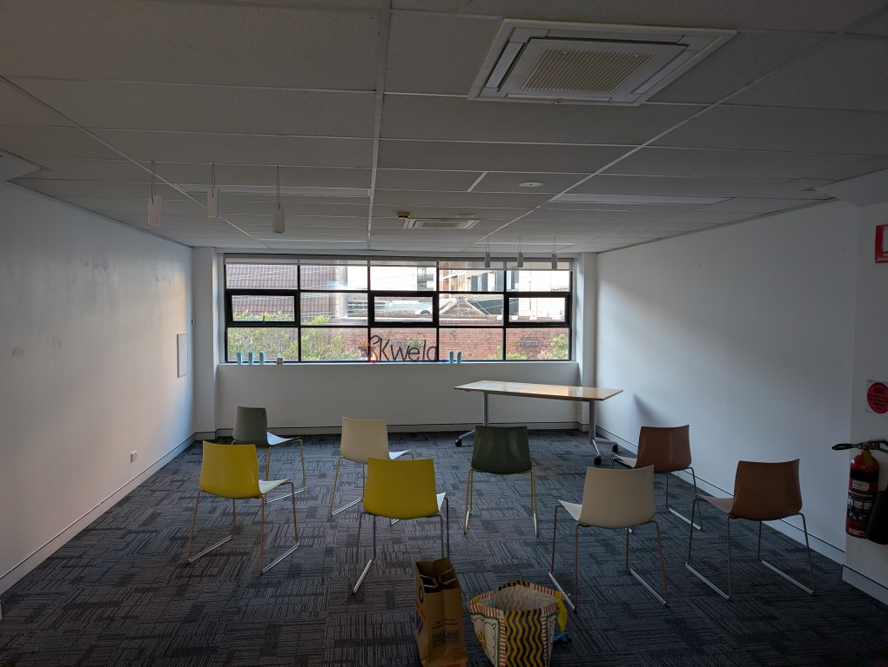
I thought it would make the room look and feel less empty but i was so wrong it looked just as depressing
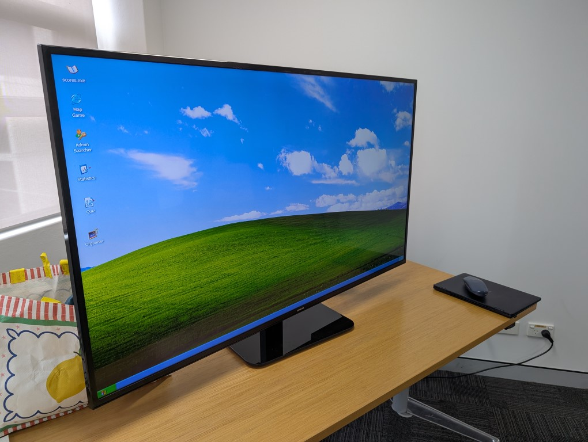
The game i made was fun tho, i made it windows xp themed because the whole thing was based on the us office (i had to bite my tongue so often as people said it was better than 30 rock and parks and rec)
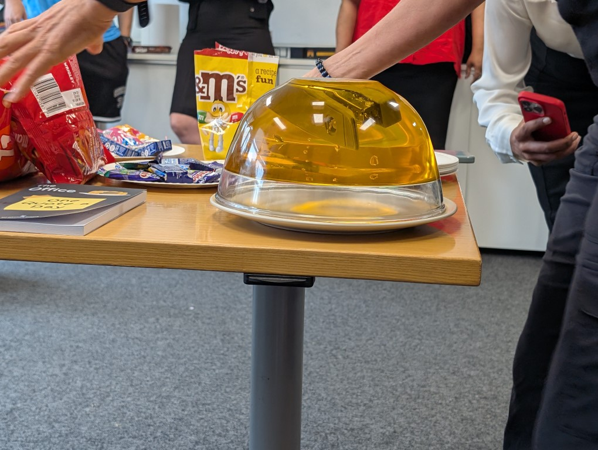
One of my bosses made the jelly stapler and it was a wild choice, no one ate it at all but i egged her on into flipping it and running it
They also made us all wear these tshirts for the 2nd day of the conference so i rebelled and wore this shirt over it and the neckerchief as i don't wear black!
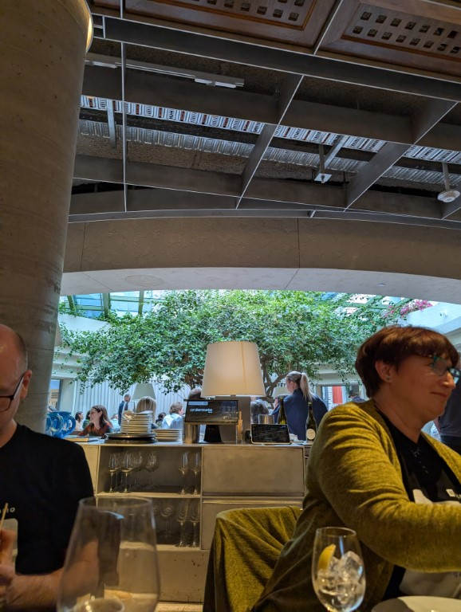
We went to a real fancy place for lunch and god it was embarrassing everyone wearing the same shirt but i survived, they had a big tree! And it was greek and we ended up drinking 2.5 bottles of white wine and 3 bottles of red just between 7 of us
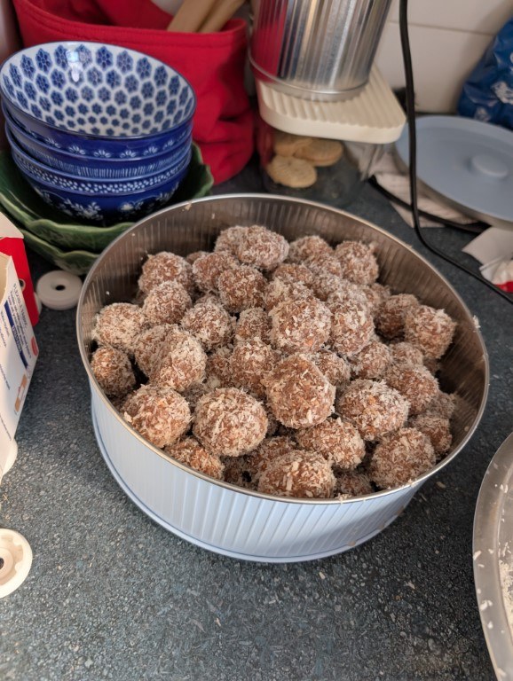
Continuing my grandmothers tradition of making snowballs for christmas i do love them so, theyre somewhat a pain to make (only because of the mess) but damn are they nice. Also i remember my grandmother once being like “no don't buy the cheap coconut get the good stuff” and having made it on both the cheap and good stuff she isnt wrong, youve gotta use the good stuff otherwise the texture is dogshit
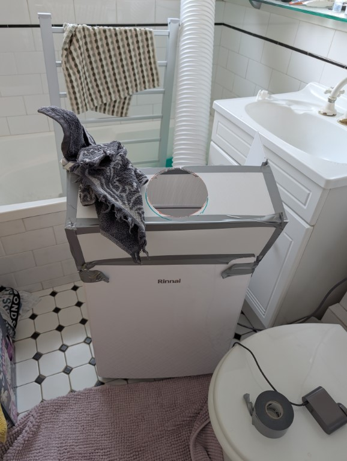
During one of the 40c days i mcguivered this hood onto the top of a portable ac to run it from my bathroom into my lounge room, it worked! Except the piping was made ofa foil so it got very condensed and also it didnt really cool the apartment down but hey. Summer in the city and all that
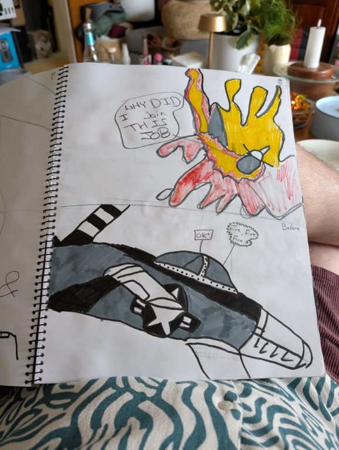
At christmas my mum had an old art book of mine and i used to be an true artist
I spent christmas night and boxing day with my mum as she house and cat sit for a friend, and felix (the cat) was such a friendly motherfucker it was wild, he fell asleep in my legs at one point and i loved it but also was like “no but i have the adhd urge to move what do i do”
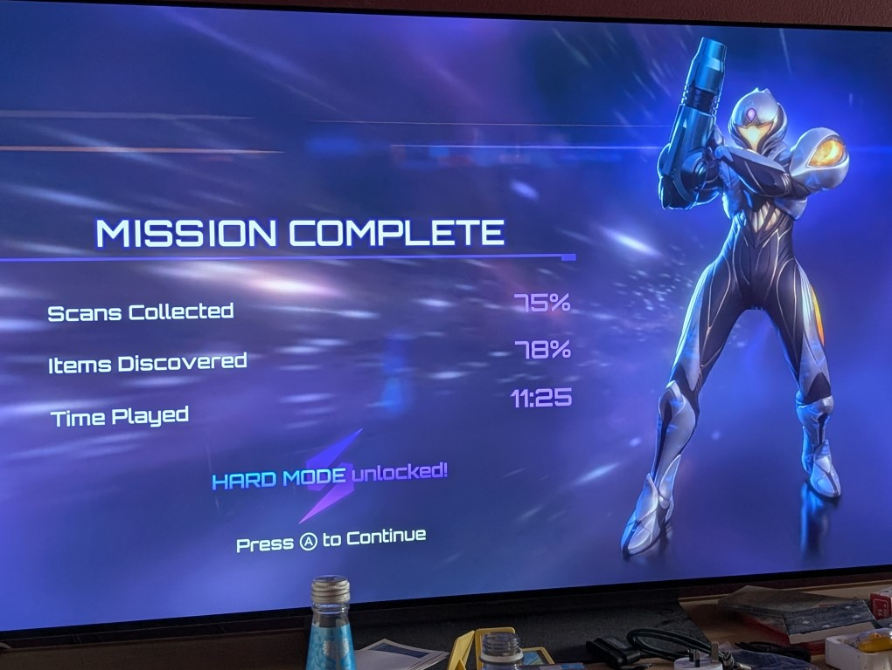
And finally, yea thats right. Im a gamer
All of you should’ve received the gift and hopefully opened it on christmas day. I hope you all enjoy the cassette tape which i think only one or two of you will actually be able to listen to but for the rest of you isnt it a fun thing to have on a shelf!
The back story to this was i was at reverse garbage (A likely place for me to be) and they had a tub full to the brim with these tapes. And suddenly it hit me that like. Thats a good bit! So i bought 20 tapes, wrapped them individually (some of them are better than others wrapping wise and thats purely down to the fact i got better as i went) and then started the tedious process of getting them to you all.
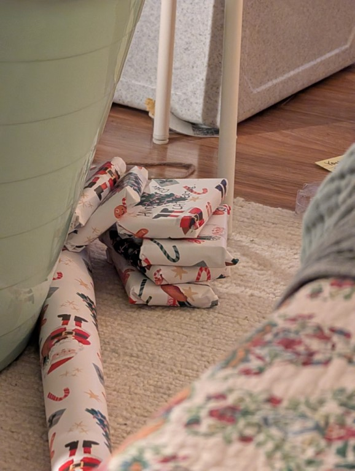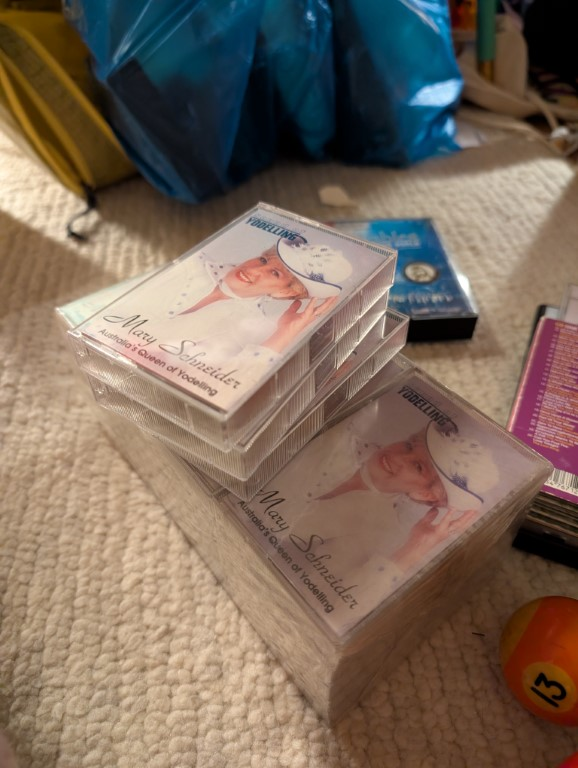
Some of you aren't in australia so that was an annoying trip to the post office filling out custom forms and also currently if your shipping to america you cant just use the online form you have to tlak to the man so that was an entire lunch break but its good! Then the domestic ones were not as annoying but it still took me half an hour to fill in all the envelopes and then legit 10 mins at the counter for them all to be scanned in. and for the sydney friends well i can just see you guys so its not hard. But i did have them in my bag when i saw avatar 3 so thats fun. And two people immediately tried to open them upon receiving them but they whats christmas!
So anyway im writing this before christmas so im excited to in like oh god its 10pm, one of you is gonna open it at the stroke of midnight im calling it now. But in the morning i excited to start receiving bewildered messages of “jack wtf is this” and i will just be laughing musically
(im just gonna put a warning here that this contains strong language, why? I dunno but part of me is like “well emily has a baby and what if the baby somehow reads this even tho the baby is 8 months old anyway for th rest of you fuck shit piss cunt)
God i have so much to scream about this, im writing this on christmas eve but yesterday i finally talked to my mum about the email i received from my grandfather which is below. My mums reaction was “ok jack you have to just shut up and do the handshake to appease them but we are going to do it in private and not infront of the extended family” and i kept bemoaning that i am not ready to actually forgive him and that im fucking pissed off at my grandparents for trying to insert themselves in as mediators when they refuse to actually hear my side and just keep insisting that i should forgive and forget because their cunt of a son can do no wrong.
Ok sorry got heated there but anyway that was a fun way to ruin a christmas eve eve shopping trip with my mum, but eventually i drive home and i start stewing on all the things im pissed at him for and end up having to pull over and reply to the email saying no because i was on the verge of tears just driving home just thinking about this. And then he fucking replied saying “oh no i wasnt asking for an actual handshake heaven no”
So my fucking grandfather esentially just sent a boomer bible quote as a like “build a bridge and get over it” thing which was not at all what any of us interpreted it as. And now i have to go to christmas lunch with them. Yipee.
Update, it went fine and turns out i misread the email and the email was basically “oht he bondi attack scared me jack you should just build a bridge and get over it” fun times
I am 7 minutes into this and i have spent most of it in tears? The bear is so fucking cute and the way his revealed is so nice?? I think the reason its fucking me up so much is that when i was a kid my great grandmother in england didnt know what to sent me so i was sent tellitubies and padington bear vhs’s that were tapped off the tv and then toys along with it which like. a) super smart, wanna make sure the kid gets the reference? Send the source. b) i also remember not being able to read her handwriting except once when she wrote in block letters for me and it was so nice sorry this is now just me remembering great granny davenport, she always wrote in these like airmail letters which were blue and tri fold. Also when she died her ashes were scattered off Dunoon in scotland so when my mum and i went last year we went to glasgow to pay our respects and itw as nice (even tho we were just on the water because getting to dunoon wouldve been so annoying) - also we had a drink and my mum full on said “oh she was a big drinker she wouldve loved this” so thats nice.
Well thats it. What does next year bring? If i had to guess a january, then a february, then a march. Then i think its april. Then wouldnt you know it but its may. Then oh whats that around the corner oh its june wait why isnt it wearing pants oh no. ok then theres july it also winnie the poohing whats going on. Ok august is there and its got pants on phew wait are they assles chaps whats going on, ok september is here and is wearing pants thank god. October is next and its wearing shorts thats fine, november! Oh a sight for sore eyes its wearing speedos. And then theres december but i cant seem to see it so thats a worry.
Anyway love you all im probs drunk now and you probs will hear that again from me at some point while drunk